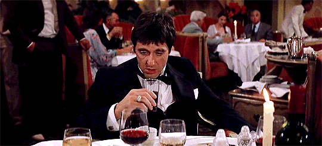

OPERACIONES
COMO MANEJABA TONY SU IMPERIO
El imperio criminal de Tony funciona como una organización jerárquica centrada totalmente en su figura. Tony controla las decisiones clave —acuerdos con proveedores, expansión del negocio y manejo del dinero— mientras delega la ejecución diaria a un pequeño grupo de hombres de confianza, especialmente a Manny Ribera. La estructura se apoya en tres pilares: suministro del producto desde contactos en Latinoamérica, distribución a través de intermediarios que mueven la mercancía en distintas ciudades, y lavado de grandes cantidades de efectivo mediante negocios y bancos para aparentar legalidad. El sistema depende casi por completo de la autoridad personal de Tony, donde la lealtad se recompensa y la traición se castiga con violencia, manteniendo así el control de toda la organización.
